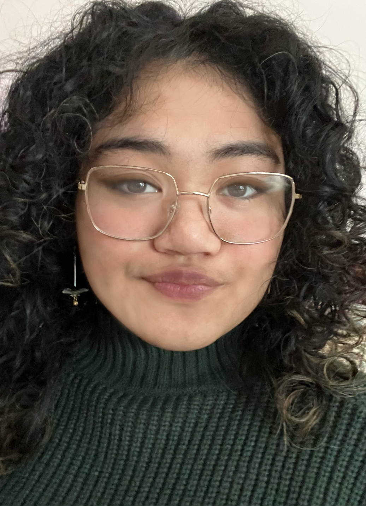

About Me
What originally inspired me to apply to the Graphic Design program is a course I took back in high school that explored some of Adobe softwares like Illustrator and Photoshop. I was really good at it and had lots of fun doing it, I then found out that that course was something that I could do for a career.
I am still inspired by that same course in high school, I look back on it fondly as I really enjoy the program. But I also have gained more inspiration from the teachers who have taught me in the first semester and continue on getting inspired by my current professors.
"In the end, we only regret the chances we didn't take."
- Lewis Carroll
My Skills
- Creativity
- Problem Solving
Graphic Design Courses
- Web Design
- Computer Graphics
- Concept Sketching
- Greek Mythology
- Graphic Design
- Typography
- Communications